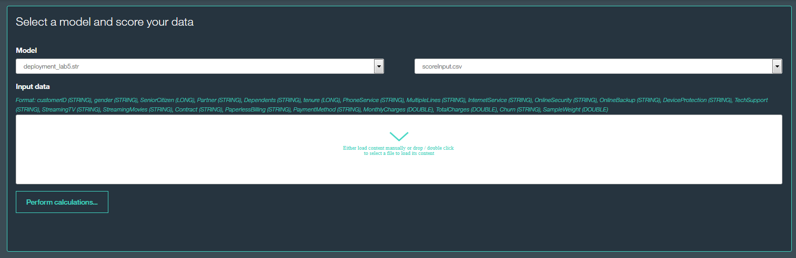

This sample application shows how to easily score csv data using SPSS Modeler stream in Bluemix.
Within sample scoring application you are able to:
select one of stream uploaded to Predictive Analytics on Bluemix
specify which source node should be used as scoring input (the application automatically provides information about required input data schema (fields name and type))

using the Input data drop box you can easily either drag and drop csv file with input data for scoring (or double click on input data field to open file browser)
call Predictive Analytics service scoring API using „Perform Calculations” button